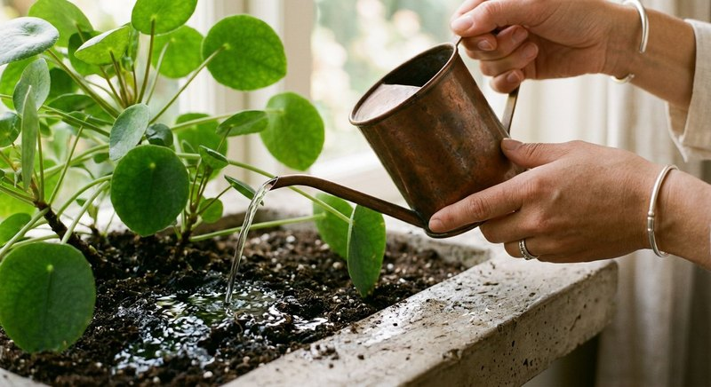

Виды растений · 2 мин чтения
Удобрение для фиалок: как подкармливать сенполию дома
Сенполия растёт в небольшом горшке, поэтому режим питания стоит подбирать внимательно. На цветение влияют не только удобрения, но и свет, температура, полив, состояние корней и размер розетки.
Материал обновлён 24.10.2026 · Справочная информация, не заменяет инструкцию на упаковке.

Когда фиалке нужна подкормка
Подкармливать имеет смысл здоровое растение, которое укоренилось и продолжает расти. После пересадки в свежий субстрат проверьте состав грунта и рекомендации его производителя: в почве уже может быть питание. Ослабленную сенполию сначала обследуют, а не «лечат» повышенной дозой.
Не существует универсального расписания для каждой фиалки. Следуйте норме удобрения и наблюдайте за растением. Если новые листья не появляются, оцените освещение и полив: дефицит света или повреждённые корни чаще не решаются добавлением подкормки.
Как внести удобрение аккуратно
Для многих цветоводов удобнее корневая подкормка: приготовьте раствор по этикетке и внесите его в грунт, не оставляя воду в поддоне. При поливе снизу следите, чтобы земляной ком не стоял в растворе дольше, чем требуется для увлажнения.
При внекорневом способе сенполии требуют особой осторожности: капли на опушённых листьях могут оставлять следы, а прямое солнце после опрыскивания нежелательно. Используйте такой способ только если он прямо разрешён производителем, и сначала испытайте раствор на небольшом участке.
Почему подкормка не гарантирует цветение
Цветение связано с количеством света, возрастом растения и сортовыми особенностями. Избыток азотного питания может стимулировать листья в ущерб компактной розетке, а избыток любого удобрения способен повредить корни. Не добавляйте повторную дозу, если фиалка не зацвела сразу.
Семяздрав в описании продавца указан для фиалок и предназначен для полива и опрыскивания. Перед применением выберите подходящий для сенполии способ по этикетке и соблюдайте указанную концентрацию.
Частые вопросы
Можно ли опрыскивать листья фиалки удобрением?
Только если это разрешено инструкцией. У сенполий опушённые листья, поэтому корневой способ часто проще и аккуратнее.
Почему у фиалки много листьев, но нет цветов?
Проверьте освещение, возраст розетки, размер горшка и состояние корней. Подкормка сама по себе не гарантирует цветение.